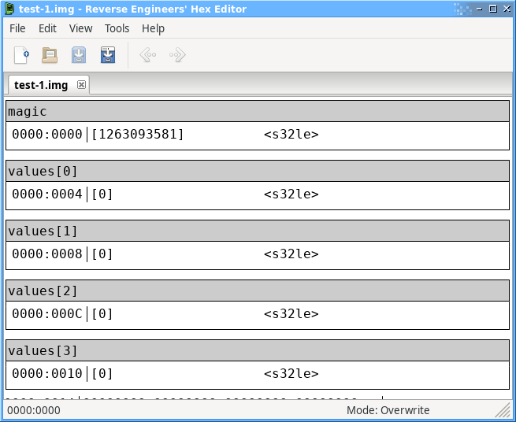
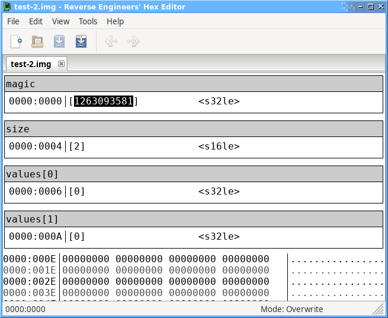

General Syntax
A template is a script with a C-like syntax which can read and process data from the open file and annotate it by setting data types, adding comments, etc. Unlike a C program, templates do not have an entry point (i.e. a main function) - they are executed from top to bottom like a shell script.
The most simple template is one that just defines some variables, which will set comments and data types in the file, for example:
int magic; int values[4];
Would produce a file like the following:

The variables you define can also be read in the template, for example to determine the length of an array from data in the file:
int magic; short size; int values[size];

That example is like the first, except the number of elements in the "values" array comes from another variable read from the file rather than being hardcoded.
Local variables
Local variables are variables that are scoped to the block they are defined in. Unlike normal variables, declaring a local variable will not annotate the file or advance the file position.
Local variables are used for temporary storage within scripts - for example loop counters, values read from the file using the File Read APIs, etc.
local int x = 0;